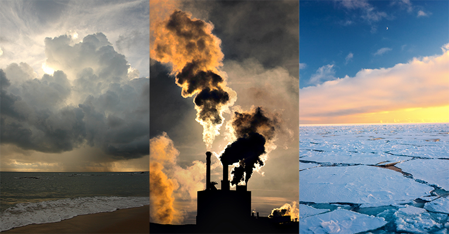

CLIMATE CHANGE : WHAT YOU NEED TO KNOW
Climate change is generally defined as a significant variation of average weather conditions-say, conditions becoming warmer, wetter, or drier-over several decades or more. It's the longer-term trend that differentiates climate change from natural weather variability...................